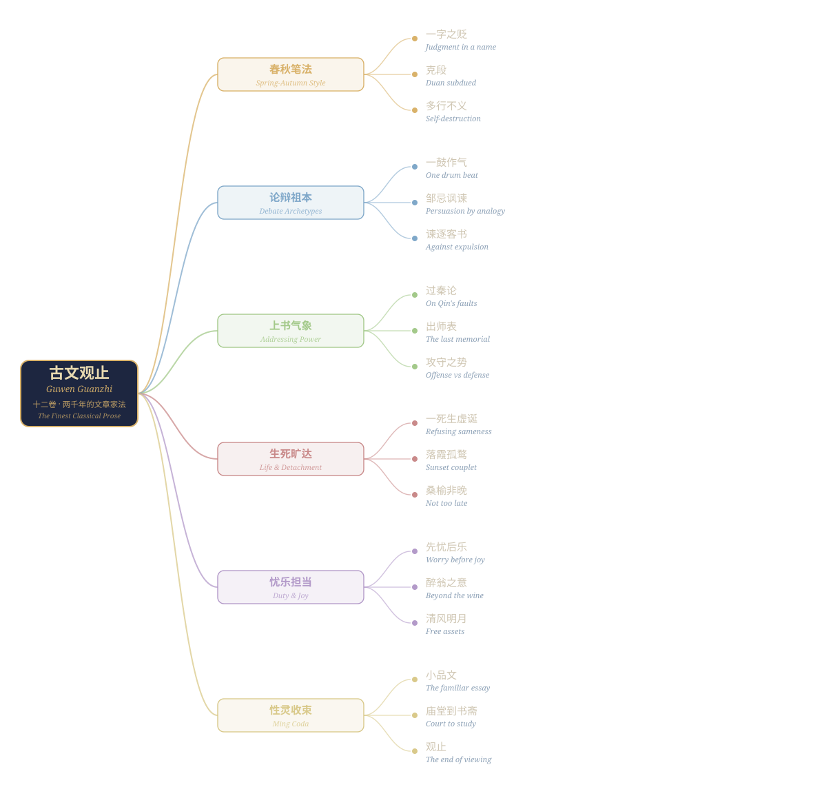

古文观止
〇 · 书籍信息
基本信息
| 书名 | 「观止」出自「叹为观止」——吴楚材、吴调侯叔侄编于清康熙年间：古文至此，观止矣——两百年私塾课本，至今仍是文言散文的第一扇门 |
|---|---|
| 体例 | 十二卷的朝代地图——卷一至卷三周文（《左传》《国语》《战国策》）、卷四至卷五秦文、卷六汉文、卷七六朝唐文、卷八唐文、卷九唐宋文、卷十至卷十一宋文、卷十二明文——以编年为经，以体裁为纬 |
| 名篇密度 | 开卷即是经典——首篇《郑伯克段于鄢》（隐公元年《左传》），中段《兰亭集序》《滕王阁序》（卷七），后段《岳阳楼记》（卷九）——一卷一篇名句：「多行不义必自毙」「固知一死生为虚诞」「落霞与孤鹜齐飞」「先天下之忧而忧」 |
| 一句话 | 从《左传》到明文，两千年的好文章讲的是同一件事：如何在权力、亲情、生死、家国面前，把话说准、把心放正——古文观止是一部「中国式表达与判断」的家法。 |
一 · 核心主题总览
这部选本里的四组母题：① 春秋笔法
卷一周文的判定技术：「段不弟，故不言弟；如二君，故曰克；称郑伯，讥失教也」——共叔段「不弟」所以不称弟，兄弟如二君所以用「克」，庄公「讥失教」所以只称「郑伯」——每一个称谓都是判决书；庄公的名言「多行不义必自毙。子姑待之」则写尽政治的隐忍与狠：不动声色，让对手自己长到该死的尺寸——古文的第一课：语言即立场。
② 亲情与政治的纠缠
同一篇《郑伯克段于鄢》的后半：「遂置姜氏于城颍，而誓之曰：『不及黄泉，无相见也。』既而悔之。颍考叔为颍谷封人，闻之，有献於公」——「小人有母，皆尝小人之食矣，未尝君之羹，请以遗之」，一句让庄公破防：「尔有母遗，繄我独无！」——「阙地及泉，隧而相见」的天才解法让誓言不被违背、亲情得以复原：「大隧之中，其乐也融融」——政治与亲情在同一篇文章里完成和解：中国人的两难，两千年前已有范本。
③ 生死与旷达
卷七六朝唐文的两种姿态：《兰亭集序》的生死感：「固知一死生为虚诞，齐彭殇为妄作。后之视今，亦犹今之视昔」——王羲之拒绝庄子的齐生死论，把「痛」如实写下；而《滕王阁序》的失意者美学：「落霞与孤鹜齐飞，秋水共长天一色」，末段自陈「勃，三尺微命，一介书生」——「东隅已逝，桑榆非晚」——六朝的深与唐的阔，在同一卷里对望。
④ 忧乐与担当
卷九压卷的是宋人的肩：《岳阳楼记》「不以物喜，不以己悲；居庙堂之高则忧其民；处江湖之远则忧其君……先天下之忧而忧，后天下之乐而乐」——范仲淹把私人的登楼之乐，改写成士大夫的责任宣言；欧阳修《醉翁亭记》则给出另一极：「醉翁之意不在酒，在乎山水之间也」——忧与乐两种宋型人格，互为表里：担当者知忧，旷达者知乐，成人者两样都要。
二 · 第一段 周文 —— 叙事与论辩的家法—— 克段 · 曹刿 · 屈原 ——
郑伯克段：一字之贬
全书首篇立起叙事的最高标准：庄公的隐忍被三句话写尽——祭仲谏「都城过百雉，国之害也」，公答「姜氏欲之，焉辟害！」；公子吕再谏，公答「无庸，将自及」；子封三谏，公答「不义不昵，厚将崩」——每一步都让对手自肥、自骄、自灭；最终「命子封帅车二百乘以伐京。京叛大叔段」——叙事的经济学：谏三次、答三次、一战而定；而结尾的「书曰」解经，让故事升格为史论——《左传》的家法：事情本身要干净利落，判断要藏在称谓里，二者互不抢戏。
◆ 语言学习 · 概念 · 春秋笔法
| 克 | 如二君故曰克：兄弟相攻的定性 |
|---|---|
| 讥失教 | 称郑伯的深意：责兄之纵弟 |
| 无庸将自及 | 庄公的冷句：等他自己长到该死 |
| 隧而相见 | 黄泉誓言的天才绕行 |
句型 ｜ 「多行不义必自毙。子姑待之。」——庄公的台词是全书最冷的告白：政治的耐心不是善意的等待，是把「必自毙」当作战术——好文章不评论这句狠话，只让你记一辈子。
论辩的范本
卷二卷三转入论辩：《曹刿论战》「夫战，勇气也。一鼓作气，再而衰，三而竭」——以「视其辙乱，望其旗靡」写职业级的战场观察；《邹忌讽齐王纳谏》以「吾妻之美我者，私我也」起兴，把家事推到国事；屈原《离骚》《卜居》则让独白进入选本——周文十二卷，叙事、论辩、抒情三条线全部铺完：后世的文体，都能在这里找到祖本。
◆ 语言学习 · 概念 · 论辩结构
| 一鼓作气 | 士气的函数：再衰三竭的时机学 |
|---|---|
| 私我畏我有求 | 邹忌的三层推论：家事进国事 |
| 讽与谏 | 以喻入言：战国说客的技法 |
| 祖本 | 文体溯源：叙事论辩抒情的原型 |
习语 ｜ 「一鼓作气，再而衰，三而竭。」——曹刿的时机论：万事皆有士气曲线——争论、谈判、写作同理：出手要在一鼓，恢复要在三竭之后。
三 · 第二段 秦汉六朝唐 —— 集权时代的文章气象—— 过秦论 · 出师表 · 兰亭 · 滕王阁 ——
秦汉的论与表
卷四至卷六是「向权力说话」的高峰：贾谊《过秦论》以「仁义不施而攻守之势异也」一锤定音；李斯《谏逐客书》以「泰山不让土壤，故能成其大」说服帝王收回成命；诸葛亮《出师表》则用「鞠躬尽瘁，死而后已」把臣子的忠诚写成绝唱——秦汉文章的共同气象：直接面对最大的权力，用最严的结构说最要紧的话——李斯的排比、贾谊的对比、诸葛亮的恳切，是三种「向上沟通」的家法。
◆ 语言学习 · 概念 · 上书体
| 过秦论 | 以秦之亡论汉之鉴：史论的巅峰 |
|---|---|
| 谏逐客书 | 泰山不让土壤：排比的说服力学 |
| 出师表 | 临表涕零：恳切成为武器 |
| 攻守之势 | 「仁义不施而攻守之势异也」：一因定论 |
句型 ｜ 「仁义不施而攻守之势异也。」——《过秦论》的收束：五百万字的兴亡，收进一句因果——好史论的本事：把复杂的失败压缩成一条可执行的政治定律。
六朝唐：从生死到少年气
卷七是文体的转调：王羲之《兰亭集序》在「天朗气清，惠风和畅」之后突然沉下去：「固知一死生为虚诞，齐彭殇为妄作」——王勃《滕王阁序》则把失意写成盛景：「落霞与孤鹜齐飞，秋水共长天一色」，末段的自我介绍极尽谦卑与骄傲：「勃，三尺微命，一介书生……东隅已逝，桑榆非晚」——六朝文的深曲与初唐文的少年气：前者教人如何面对死，后者教人如何面对败——一卷之内，两种人生课。
◆ 语言学习 · 概念 · 少年气
| 一死生为虚诞 | 王羲之的翻案：拒绝把痛说成齐一 |
|---|---|
| 落霞孤鹜 | 骈文的视觉巅峰：对仗即取景 |
| 三尺微命 | 自谦的极致：卑微与骄傲同体 |
| 桑榆非晚 | 失意者的时钟：晚景里另有窗口 |
习语 ｜ 「东隅已逝，桑榆非晚。」——《滕王阁序》给所有失意者的对仗安慰：早晨的损失不等于傍晚的缺席——二十来岁的王勃写下它，千年后仍是转行的最好理由。
四 · 第三段 唐宋明 —— 家国与性灵的合流—— 岳阳楼 · 醉翁亭 · 明文 ——
岳阳楼的担当
卷九范仲淹《岳阳楼记》给宋文定调：先写两幅画面——「阴风怒号，浊浪排空」的迁客之悲与「春和景明，波澜不惊」的宠辱偕忘，再翻出一层：「不以物喜，不以己悲」——最后落到千古之志：「居庙堂之高则忧其民；处江湖之远则忧其君……先天下之忧而忧，后天下之乐而乐」——滕子京求的是「记」，范仲淹给的是「训」：一篇应酬文字被写成士大夫的职业道德总纲——古文观的最后一课：文章的分量不在文笔，在立意的高度。
◆ 语言学习 · 概念 · 忧乐观
| 不以物喜 | 私情的悬置：从登楼者到担当者 |
|---|---|
| 庙堂江湖 | 两个位置一个方向：在朝在野皆忧民 |
| 先忧后乐 | 士大夫的时序伦理：责任在前 |
| 应酬变宣言 | 求记与送训：立意改写文体 |
句型 ｜ 「先天下之忧而忧，后天下之乐而乐。」——全书最重的一句：把「忧」排在「乐」前面的时序，就是责任的定义——范仲淹没到过岳阳楼，却写出了中国人对公共人的全部想象。
宋明的性灵与结尾
卷十至卷十二的走向：欧阳修《醉翁亭记》以二十一个「也」字写出从容：「醉翁之意不在酒，在乎山水之间也」；苏轼《赤壁赋》「惟江上之清风，与山间之明月……取之无禁，用之不竭」——把失意者安顿在天地之间；明文收束全书：刘基、宗臣、归有光、袁宏道——家国大义渐让位于性灵小品——十二卷的末尾，文章从庙堂走回书斋：通史式的选本，连「文章的去向」都算准了。
◆ 语言学习 · 概念 · 性灵
| 醉翁之意 | 不在酒：审美对职务的超越 |
|---|---|
| 清风明月 | 「取之无禁，用之不竭」：失意的免费资产 |
| 二十一个也 | 《醉翁亭记》的从容：句式的呼吸 |
| 性灵小品 | 明文的去向：文章走回书斋 |
习语 ｜ 「惟江上之清风，与山间之明月……取之无禁，用之不竭。」——《赤壁赋》的经济学：被贬的人盘点资产，发现天地免费——苏轼的旷达不是躺平，是换了一套资产负债表。
五 · 人物图鉴与成长弧线—— 主角配角 · 一张表看穿 ——
主要人物
吴楚材、吴调侯——编者叔侄——清康熙年间的塾师：为教课编出千古第一古文选——「观止」二字是自信也是标准
左丘明——周文的重镇——《郑伯克段于鄢》等《左传》诸篇立起叙事与判断的家法
王羲之——六朝的深情——「一死生为虚诞」：拒绝齐生死论，把痛如实写下
范仲淹——宋文的肩——「先天下之忧而忧」：把一篇楼记写成公共人的职业道德
次要人物（功能位）
| 颍考叔 | 聪明的封人——「食舍肉」的小动作引出「阙地及泉」：让誓言与亲情两全 |
|---|---|
| 诸葛亮 | 恳切的极致——《出师表》「临表涕零，不知所言」：忠诚的文体化身 |
| 王勃 | 少年气象——「三尺微命，一介书生」：把失意写成名句的二十来岁 |
| 苏轼 | 旷达的账房——《赤壁赋》盘点天地资产：清风明月取之无禁 |
六 · 主题与象征—— 每个道具都在说话 ——
| 黄泉 ↔ 隧地 | 誓言的绕行——「阙地及泉，隧而相见」：信义与人情两全的古代解法 |
|---|---|
| 克 ↔ 称谓 | 春秋笔法——一字之贬严于斧钺：判断藏在语言里 |
| 落霞 ↔ 孤鹜 | 对仗即取景——骈文把失意写成盛景的视觉技术 |
| 岳阳楼 ↔ 肩 | 担当符号——先忧后乐：公共人的时序伦理 |
| 清风明月 ↔ 旷达 | 免费资产——苏轼的资产负债表：换一套算法安顿失意 |
七 · 写作手法赏析—— 怎么写，就能怎么学 ——
① 编年为经
十二卷的朝代地图——周秦汉六朝唐宋明一路排下：选本自带文学史骨架
② 首篇立范
开卷即《郑伯克段于鄢》——叙事、笔法、亲情、政治四课合一：课本的野心从第一页可见
③ 名句密度
「多行不义」「落霞孤鹜」「先忧后乐」——平均每卷产出传世成语：选家的眼力即产品的口碑
④ 解经随文
「书曰」「君子曰」的史论收束——故事完了加一句判词：叙事与判断分工明确
⑤ 塾师实用主义
为教学而编——篇幅适中、注释分明、名篇优先：两百年畅销的产品逻辑
八 · 名段欣赏—— 原文精读 · 逐段赏析 ——
九 · 金句摘录—— 14 条 · 中英对照 · 带出处 ——
"书曰：「郑伯克段于鄢。」段不弟，故不言弟；如二君，故曰克；称郑伯，讥失教也，谓之郑志。"—— 卷一 ·《左传》
"多行不义必自毙。子姑待之。"—— 郑庄公 ·《郑伯克段于鄢》
"不及黄泉，无相见也。既而悔之。"—— 《郑伯克段于鄢》
"小人有母，皆尝小人之食矣，未尝君之羹，请以遗之。"—— 颍考叔
"大隧之中，其乐也融融！"—— 庄公 ·《郑伯克段于鄢》
"一鼓作气，再而衰，三而竭。"—— 曹刿 ·《曹刿论战》
"泰山不让土壤，故能成其大。"—— 李斯 ·《谏逐客书》
"仁义不施而攻守之势异也。"—— 贾谊 ·《过秦论》
"鞠躬尽瘁，死而后已。"—— 诸葛亮 ·《后出师表》
"固知一死生为虚诞，齐彭殇为妄作。"—— 王羲之 ·《兰亭集序》
"落霞与孤鹜齐飞，秋水共长天一色。"—— 王勃 ·《滕王阁序》
"东隅已逝，桑榆非晚。"—— 王勃 ·《滕王阁序》
"居庙堂之高则忧其民；处江湖之远则忧其君。"—— 范仲淹 ·《岳阳楼记》
"先天下之忧而忧，后天下之乐而乐。"—— 范仲淹 ·《岳阳楼记》
十 · 拓展阅读—— 原文 · 词条 · 译文 ——
十一 · 个人感悟与心得—— 三点心得 ——
三点感悟
① 判断藏在语言里
春秋笔法的迁移：称谓、动词、语序都是立场——写报告、做汇总、下结论时，你的每一个用词都在「书曰」；善用者藏刀于鞘，不善者处处漏锋。
② 立意决定文章的分量
《岳阳楼记》的启示：一篇应酬文字被立意拔成千古宣言——文案的高度不在修辞在担当：先问自己替谁说话、忧在乐前还是乐前忧无。
③ 给失意配一个好句式
「东隅已逝，桑榆非晚」：中国人早就为转场备好了对仗——失意的质量取决于叙述失意的句式：桑榆的窗口，要自己认领。
十二卷读完，这本两百年前的塾师课本给出的惊喜是它的「完整性」——叙事的家法（左传）、论辩的家法（战国策）、上书的家法（秦汉）、面对生死的家法（兰亭）、面对失意的家法（滕王阁）、面对家国的家法（岳阳楼）——两千年的中国人如何说话、如何判断、如何自处，一套课本全部传完。观止二字，不是傲慢，是交代。
十二 · 一页速查（复习用）
| 春秋笔法 | 一字之贬：称谓即判决 |
|---|---|
| 隧而相见 | 黄泉誓言的两全解法 |
| 一鼓作气 | 士气曲线与出手时机 |
| 桑榆非晚 | 失意者的对仗安慰 |
| 先忧后乐 | 责任的时序定义 |
十三 · 全书思维导图—— 一图纵览 ——

一图纵览全书骨架 · 中英双语对照 · 手机端可左右滑动查看全图